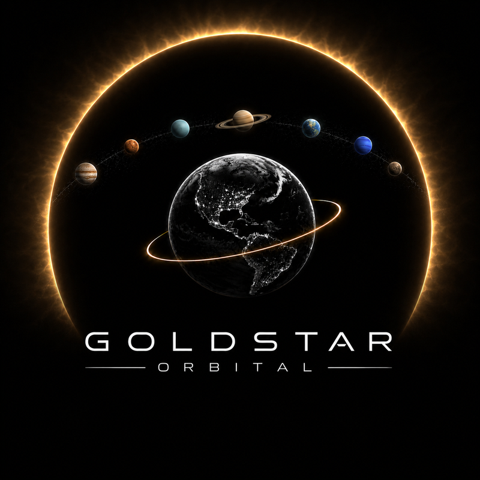
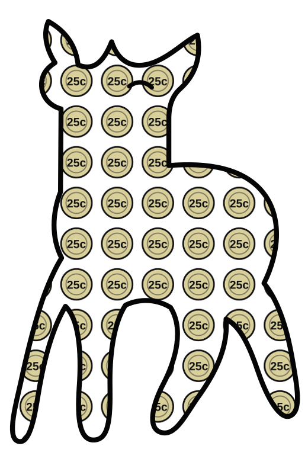
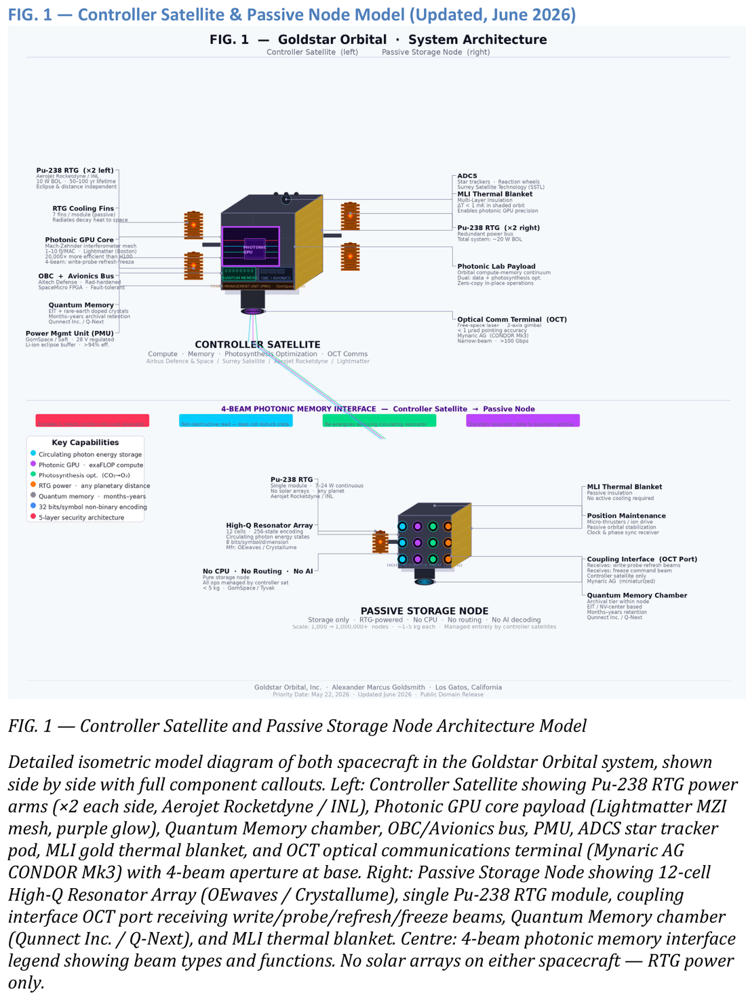

Three products.
One team.
Goldstar Orbital builds orbital data infrastructure — and the team behind it ships real, working products today: a campus payments app and a faith-based fitness app, alongside the orbital architecture itself.
What we've built
Three projects, equally real.
Click any card to jump straight to it.
Goldstar Orbital
Orbital photonic data architecture, patent pending. In development.
See the architecture →
Fawn
Instant transfers and banking, built for campus life. Live today.
See Fawn →Functioning Faith
Real activity tracking with scripture chosen for the moment. Live today.
See Functioning Faith →Mission Architecture
Designed for Mars, not adapted for it.
Mars gets less than half of Earth's sunlight, with dust storms that can cut it further for weeks. So the system runs on Pu-238 radioisotope power instead of solar — the same technology behind Cassini and Voyager — giving each node 50–100 years of operation regardless of eclipse or dust.

Earth-side compression engine
No satellites yet. The same multi-symbol encoding behind the storage architecture powers a compression engine, in development on Earth first.
1,000 nodes — Mars comm relay + data
~10 petabytes of live storage. A standard Falcon 9 or Starship trans-Mars injection is sufficient — passive nodes need no crew, no life support.
100,000 nodes — full Mars data infrastructure
~100 exabytes of live storage — a real alternative to a ground-based data center, for a planet with no ground-based alternative.
1,000,000 nodes — data + O₂ generation
The same hardware storing Mars's data starts driving CO₂ + H₂O → O₂ through tuned photonic delivery to surface reactors. No separate mission, no separate hardware.
10,000,000+ nodes — full dual function
~10,000,000 kg of O₂/day — atmospheric oxygen on a 10–50 year timescale instead of a geological one. One constellation, two functions, running on RTG power.
Why this is a compute story, not just storage: the controller satellites carry a photonic GPU — light-speed matrix operations at 1–10 femtojoules per operation, versus ~200,000 for an NVIDIA H100. H100-class silicon is still the peak of electronic compute; orbital vacuum is what lets photonic hardware finally use its physics advantage.
| Metric | Photonic GPU (orbital) | Electronic GPU (H100) |
|---|---|---|
| Energy per MAC operation | 1–10 femtojoules | ~200,000 femtojoules |
| Thermal constraints | Near zero (orbital vacuum) | Severe — requires active cooling |
| Node / card lifetime | 50–100 years (Pu-238 RTG) | 3–5 year refresh cycle |
| Phase stability | Millikelvin variation | Requires active thermal management |
Patent family
Phase 1 — Results
Compression that shouldn't be possible.
Pick a file type to see how the engine compares to a standard tool on the same file.
In development
Not yet available for public testing.
Any file, no format assumptions
PDF, DOCX, JPEG, ZIP, EXE — no specific format required.
Patent pending
Priority date May 22, 2026.
Built by Goldstar Orbital
Fawn — instant transfers, built for campus life.
Send money instantly by username, save automatically, and unlock student and merchant perks.
Fawn moves the $50 the moment you hit send. The bank lane plays out a standard 3-business-day ACH hold in real time — watch the clock, not a promise.
Built by Goldstar Orbital
Functioning Faith — scripture in motion.
Real GPS runs, real heart-rate pairing, and scripture chosen for the moment you're actually in.
"Be still, and know that I am God."
Psalm 46:10Low heart rate, warm-up pace — scripture leans toward stillness and presence.
A model never produces scripture.
Gloo AI decides which scripture fits your live heart-rate and tradition. YouVersion supplies the actual verse text, in 14 translations. A truncated or unresolved reply is discarded — never shown as scripture. GET /api/ai/status is public, so the claim is checkable.
Field Notes
Product walkthroughs and everything else.
Short-form video from the Goldstar Orbital channel — product demos alongside a couple of unrelated documentary pieces, left in because they're part of the same body of work.
Get in touch
Building the compute layer for what comes after warehouses.
The fastest way to reach us.